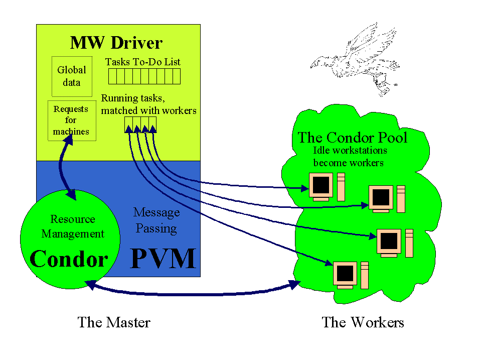

This page contains information, documentation, and source code for the MW project.
MW is a tool for making a master-worker style application that works in the distributed, opportunistic environment of HTCondor. MW applications use HTCondor as a resource management tool, and can use either HTCondor-PVM or MW-File a file-based, remote I/O scheme for message passing. Writing a parallel application for use in the HTCondor system can be a lot of work. Since the workers are not dedicated machines, they can leave the computation at any time. Machines can arrive at any time, too, and they can be suspended and resume computation. Machines can also be of varying architechtures and speeds. MW will handle all this variation and uncertainty in the opportunistic environment of HTCondor.
The master, or MWDriver, is basically a layer that sits above the program's resource management and message passing mechanisms and below your application. It handles things like nodes going up/down, suspending/resuming, and the starting and stopping of jobs. It does this by managing a set of user-defined tasks and a pool of workers. The workers do user-defined work on the tasks that they're given. The MWDriver simply matches tasks to workers.
To learn more, read the users guide, or look at the overview. You can refer to several papers that we have written that explain the rationale behind our design choices. Other information can be found in overview talks given in December 99 , June 99, February 99, March 2000, and most recently February 2004. Documentation (constructed with Doc++) for MW base classes is here. Here is an example application.
Most of the real applications using MW that people have built so far are to solve mathematical Optimization problems. To see some of these real-world solvers, see our solvers page.
The diagram below indicates the relationships between HTCondor, PVM, and the MWDriver.
